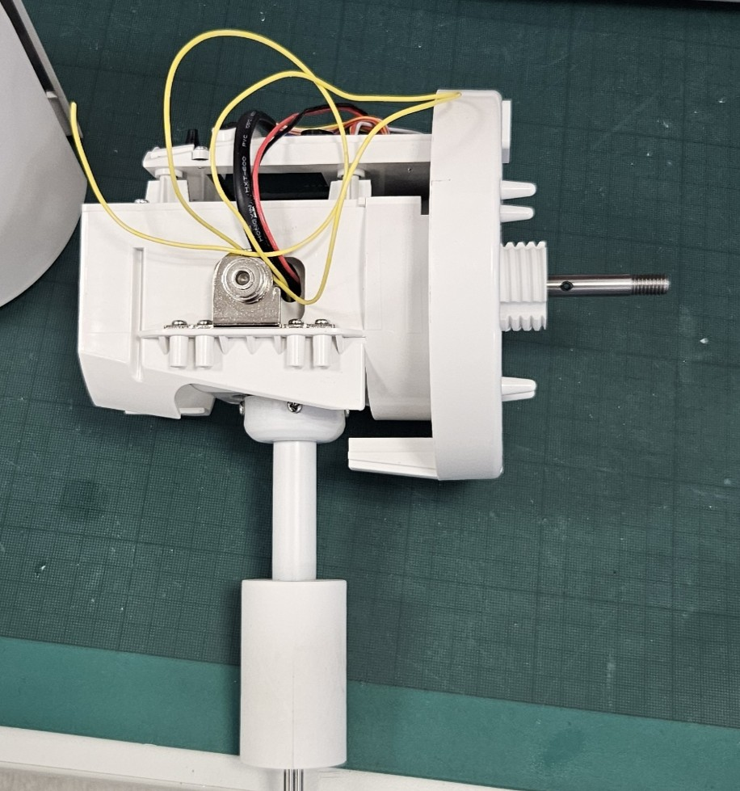
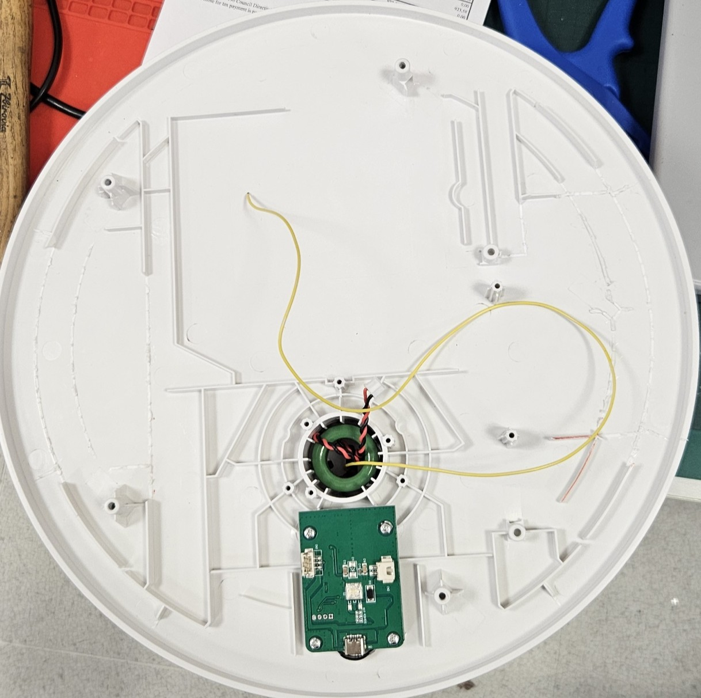

Sestavení zařízení
Tento návod popisuje krok za krokem, jak sestavit celé zařízení od jednotlivých dílů až po funkční pojízdný větrák.
Než začnete, ujistěte se, že máte:
- Všechny komponenty ze seznamu
- Rozložený větrák podle návodu na rozborku
- Vytištěné 3D díly
- Přečtený návod na zapojení
Krok 1: Příprava 3D tištěného podvozku
- Vytiskněte všechny díly podvozku podle návodu na 3D tisk
- Odstraňte podpěry a začistěte hrany (pilníkem nebo nožem)
- Vložte opěrné kuličky (5 ks) do připravených otvorů na spodní straně podvozku – kuličky zajišťují stabilitu a umožňují volný pohyb
- Vložte ložiska do kol (2× ZKL 626-2Z) do připravených otvorů pro osy
Krok 2: Montáž motorů a kol
- Vložte oba motory JGY-370 do připravených úchytů v podvozku
- Připevněte motory šroubky ze spodní strany
- Nasaďte kola na hřídele motorů
- Zkontrolujte, že se kola volně otáčejí a nebrzdí o podvozek
Krok 3: Příprava elektroniky na prototypovacím PCB
V podvozku jsou dva univerzální plošné spoje. Na ně zapájíte konektory pro propojení elektroniky.
- Napájejte konektory JST-XH na PCB (pro motory, senzory, napájení)
- Zapájejte napájecí rozvod:
- 24V přívod z baterie
- Výstup na motor drivery (24V)
- Výstup na step-down měnič (24V vstup → 5V výstup pro ESP32)
- Zapájejte signálové vodiče z ESP32 pinů ke konektorům
- Podrobný postup viz návod na zapojení
Krok 4: Montáž motor driverů
- Umístěte oba moduly BTS7960B do podvozku
- Připevněte šroubky
- Propojte motor drivery s PCB pomocí připravených konektorů:
- Napájení (24V)
- Signálové vodiče (RPWM, LPWM, EN)
- GND
- Připojte vodiče motorů k výstupům M+/M- na motor driverech
Krok 5: Osazení ESP32
- ESP32 umístěte na PCB (ideálně do dutinkové patice, aby šla snadno vyměnit)
- Propojte s napájením (5V z měniče na VIN pin, GND)
- Před zapnutím zkontrolujte multimetrem napětí na step-down měniči (musí být 5V!)
- Zapojte signálové vodiče ke konektorům na PCB
Krok 6: Montáž ultrazvukových senzorů
- Senzory HC-SR05 vtlačte do připravených otvorů v podvozku (nejsou šroubované, drží třením)
- Připojte konektory senzorů na PCB (VCC, GND, TRIG, ECHO)
Krok 7: Nasazení sloupku a protažení kabelů
Toto je klíčový krok – sloupek spojuje podvozek s hlavicí větráku a vedou jím kabely.
- Protáhněte sloupkem:
- Napájecí kabel (24V pro motor ventilátoru a DC-DC měnič v hlavici)
- Žlutý signálový drát pro LED pásek (datový pin GPIO 23)
- Připojte konektory na obou koncích kabelu (spodní + horní)
- Nasaďte sloupek na podvozek a zajistěte aretačními šroubky
- Postup rozebírání/skládání konektorů ve sloupku viz rozborka


Krok 8: Montáž hlavice – DC-DC měnič a LED pásek
- Do hlavice umístěte step-down měnič LM2596 nastavený na 3.7V
- Vstup: 24V z kabelu vedeného sloupkem
- Výstup: 3.7V pro LED pásek

- LED pásek WS2812 připevněte utahovacími pásky podél obvodu klece větráku
- Pozor na směr! Šipky na pásku ukazují směr toku dat
- Datový vstup (DIN) připojte na žlutý signálový drát z trubky
- Napájení (VCC + GND) připojte na výstup DC-DC měniče

- Nasaďte hlavici zpět na sloupek a zajistěte šroubky
Krok 9: Vložení baterie a test
- Vložte baterii zpět do přihrádky (pozor na pogo piny!)
- Zapněte zařízení
- LED pásek by měl začít červeně pulzovat (čeká na spárování ovladače)
- Spárujte Xbox ovladač – LED by se měly rozsvítit barevně
- Otestujte:
- Motory reagují na joystick
- LED režimy se přepínají tlačítky A/B/X/Y
- Pokud něco nefunguje, viz Řešení problémů
Krok 10: Nádobka na bonbóny
- Připevněte 3D tištěnou nádobku na bonbóny na určené místo na zařízení
- Zkontrolujte, že nádobka nebrání otáčení kol ani ventilátoru
Krok 11: Nasazení mexického kostýmu
- Umístěte sombrero na vršek hlavice (uchycení přes ložisko)
- Navlékněte poncho na tělo větráku
- Zkontrolujte, že dekorace:
- Neblokuje kola
- Neblokuje ventilaci
- Nezakrývá ultrazvukové senzory
- Nespadává při jízdě
Podrobnosti viz Kostým a dekorace.
Hotovo!
Pokud jste úspěšně prošli všemi kroky, máte sestaveného mexického chodícího větráka. Kompletní návod k ovládání najdete v sekci Návod k obsluze.